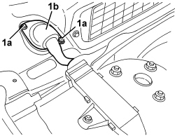
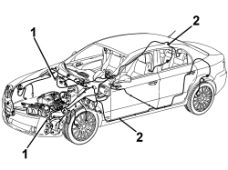

5505C29 ENGINE COMPARTMENT AND A.B.S. BUILT-IN WIRING - R.R. WITH INTERFERING COMPONENTS REMOVED
- Path
- Procedures > 55 ELECTRICAL EQUIPMENT > 5505 INSTRUMENT/GAUGE ELECTRICAL CIRCUITS > 5505C VEHICLE COMPARTMENT WIRING > 5505C29 ENGINE COMPARTMENT AND A.B.S. BUILT-IN WIRING - R.R. WITH INTERFERING COMPONENTS REMOVED
- Kind
- repair procedure (removal / refitting; the operation number is the code)
- Applies to
- all engines; all production periods
- Interactive page
- https://sloeber94.github.io/elrnDB/#/939010976
Applies to: all engines; all production periods
 Removing
Removing
 Refitting
Refitting1. Working on both sides of the vehicle, undo the nuts (1a) securing bulkhead coupling node (1b).

Applies to: all engines; all production periods
1. Disconnect all the electrical connections for the wiring.
2. Release the wiring from the retainers and remove it.

Applies to: all engines; all production periods
Refitting
Removing- Check that the wiring is not damaged and that the individual conducts are correctly fastened to the connections.
If necessary, carry out continuity tests.
- Position the wiring and secure it using the various retainers.
- Connect all the electrical connections for the wiring.
- Working on both sides of the windscreen base, position the bulkhead coupling node, then tighten the nuts.